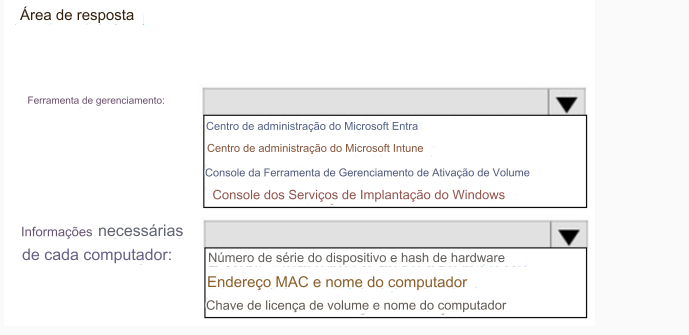

225- PONTO DE ACESSO
Sua empresa possui uma infraestrutura que conta com o seguinte:
• Um locatário do Microsoft 365
• Uma floresta do Active Directory
•Microsoft Intune
• Um servidor de serviço de gerenciamento de chaves (KMS)
• Um servidor Windows Deployment Services (WDS)
• Um locatário do Azure AD Premium
A empresa adquire 100 novos computadores clientes que executam Windows.
Você precisa garantir que os novos computadores sejam ingressados automaticamente no Azure AD usando o Windows
Autopilot.
O que você deve usar?
Para responder, selecione as opções apropriadas na área de resposta.
NOTA: Cada seleção correta vale um ponto.
